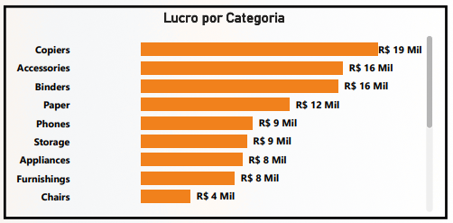

Projeto: Dashboard Amazon - Análise de Vendas e Lucratividade
Introdução
Este projeto apresenta um Dashboard de análise de vendas e lucratividade, desenvolvido para simular o ambiente de e-commerce e varejo da Amazon. O principal objetivo é fornecer uma visão detalhada do desempenho financeiro da empresa ao longo dos anos, identificar os produtos e categorias mais rentáveis, analisar o comportamento de compra dos clientes e avaliar a eficiência operacional, como o tempo de entrega. O painel visa capacitar a gestão a tomar decisões estratégicas relacionadas a estoque, precificação, marketing e otimização da cadeia de suprimentos.
Estrutura do Projeto
O dashboard é organizado em diferentes seções, cada uma focando em um aspecto crucial da análise de negócios:
- Visão Geral Financeira: KPIs de vendas, lucro e margem, além de uma linha do tempo da performance anual.
- Produtos e Clientes de Destaque: Identificação dos produtos mais vendidos e dos clientes mais lucrativos.
- Análise por Categoria: Detalhamento de pedidos, lucro e vendas por diferentes categorias de produtos.
- Eficiência Operacional e Comportamento de Pedidos: Avaliação do tempo médio de entrega e a distribuição de pedidos por mês e por cliente.
Tecnologias Utilizadas
Para a construção deste dashboard, as ferramentas empregadas foram:
- Power BI Desktop: Para conectar a fonte de dados, realizar a modelagem e transformação necessárias, desenvolver as medidas DAX para cálculos complexos e construir os visuais interativos que compõem o dashboard.
- Figma: A prototipação e o design do dashboard foram feitos com o Figma, garantindo uma experiência de usuário intuitiva e visualmente atraente.
Processo de ETL (Extração, Transformação e Carregamento)
O processo de ETL para o Dashboard Amazon foi rigorosamente executado para garantir a qualidade e a integridade dos dados:
- Extração: Os dados foram extraídos de uma única planilha Excel (
.xls), que consolidava todas as informações de vendas, produtos, clientes e operações necessárias para a análise. - Transformação: No Power Query, parte integrante do Power BI, foram realizadas diversas operações de limpeza e enriquecimento. Isso incluiu:
- Tratamento de dados, como a padronização de nomes e a correção de valores.
- Criação de novas colunas e métricas calculadas que seriam essenciais para as análises, utilizando a linguagem M.
- A modelagem de dados foi cuidadosamente definida, estabelecendo relacionamentos entre as tabelas e garantindo que todas as informações pudessem ser corretamente agregadas e filtradas para uma análise multidimensional.
- Carregamento: Após as etapas de extração e transformação, os dados foram carregados no modelo de dados do Power BI, estando prontos para alimentar todos os gráficos e tabelas do dashboard, permitindo a exploração interativa.
Dashboard
O dashboard apresenta um layout claro e organizado, com uma navegação intuitiva entre as diferentes análises. A interface combina cartões de KPI, gráficos de barras e linhas para tendências temporais e rankings, além de tabelas detalhadas. Cada visual é projetado para destacar informações chave e permitir a exploração interativa dos dados, facilitando a identificação de padrões e insights acionáveis para o negócio.
Insights
A análise dos dados apresentados no dashboard revelou insights valiosos sobre a performance de vendas e lucratividade:
- Visão Geral Financeira Robusta:
- O painel destaca um Total de Vendas de R$ 3,59 Milhões e um Total de Lucro de R$ 108 Mil.
- A Margem de Lucro é de 3,02%, indicando a eficiência na conversão de vendas em lucro.

- A análise temporal de Vendas por Ano mostra um crescimento contínuo de 2011 a 2014, com o ano de 2014 registrando o maior volume de vendas, próximo a R$ 1,5 Milhão, sublinhando uma trajetória positiva de expansão.
- O painel destaca um Total de Vendas de R$ 3,59 Milhões e um Total de Lucro de R$ 108 Mil.

- Produtos e Clientes de Destaque:
- Entre os Produtos Mais Vendidos, “Staples” lidera com R$ 1,2 Milhão em vendas, seguido por produtos como “Wilson Jones Clip &…” e “Cardinal EasyOpen …”, com R$ 1,0 Milhão. Esses dados são cruciais para a gestão de estoque e campanhas de marketing direcionadas.
- Na análise de Lucro por Cliente, Raymond Buch se destaca, seguido por Jane Waco, evidenciando os clientes de maior valor para o negócio e a importância de programas de fidelidade.

- Entre os Produtos Mais Vendidos, “Staples” lidera com R$ 1,2 Milhão em vendas, seguido por produtos como “Wilson Jones Clip &…” e “Cardinal EasyOpen …”, com R$ 1,0 Milhão. Esses dados são cruciais para a gestão de estoque e campanhas de marketing direcionadas.
- Eficiência e Desempenho por Categoria:
- O Ticket Médio das vendas é de R$ 2.230,55, e o Valor Médio por Unidade é de R$ 226,49, indicando o valor transacional por pedido e por item vendido.
- Em Número de Pedidos por Categoria, “Binders” lidera com 403 pedidos, seguido por “Paper” (384) e “Furnishings” (281), o que sugere alta demanda por esses itens.

- A Vendas por Categoria mostram “Copiers” com R$ 0,50 Milhão** e “Phones” com R$ 0,49 Milhão, liderando em receita.
- Por outro lado, em Lucro por Categoria, “Tables” (R$ 19 Mil), “Copiers” (R$ 16 Mil) e “Binders” (R$ 16 Mil) são os maiores contribuintes, revelando que nem sempre as categorias com maior volume de vendas são as mais lucrativas.

- O Ticket Médio das vendas é de R$ 2.230,55, e o Valor Médio por Unidade é de R$ 226,49, indicando o valor transacional por pedido e por item vendido.
- Performance de Pedidos e Clientes:
- O Tempo Médio de Entrega é de 3,93 dias, um KPI importante para a satisfação do cliente. O Número Total de Pedidos no período é de 1.611.

- A análise de Pedidos por Mês ao longo dos anos revela que Setembro (227), Novembro e Dezembro (ambos com 234 pedidos, são os meses de pico, sugerindo sazonalidade nas compras.

- Em Número de Pedidos por Cliente, Arianne Irving e Bill Donatelli estão entre os clientes com 7 pedidos cada, mostrando alta frequência de compra.

- Total de Vendas por Cliente reitera o valor de Raymond Buch (R$ 58 Mil) e Nora Preis (R$ 55 Mil) como os clientes que geram mais receita.

- O Tempo Médio de Entrega é de 3,93 dias, um KPI importante para a satisfação do cliente. O Número Total de Pedidos no período é de 1.611.
Considerações
O dashboard oferece uma base sólida para otimizar as operações e as estratégias de vendas da Amazon (simulada). A partir dos insights obtidos, algumas considerações importantes surgem:
- Otimização do Mix de Produtos: A diferença entre categorias mais vendidas e mais lucrativas (“Copiers” e “Phones” vs. “Tables”) indica a necessidade de uma análise mais aprofundada de custos e precificação. A empresa pode focar em aumentar as vendas de itens de alta lucratividade ou buscar maneiras de melhorar a margem de produtos de alto volume.
- Gestão de Estoque e Demanda Sazonal: O pico de pedidos entre Setembro e Dezembro é um indicativo claro de sazonalidade. A gestão de estoque e o planejamento de campanhas de marketing devem ser intensificados nesses meses para capitalizar a demanda.
- Melhora Contínua do Tempo de Entrega: Um tempo médio de entrega de 3,93 dias é razoável, mas em um ambiente competitivo como o e-commerce, a otimização contínua desse KPI pode ser um diferencial crucial para a satisfação e retenção de clientes.
- Programas de Fidelidade e VIP: A identificação dos clientes de maior valor, tanto em lucro quanto em vendas, permite a criação de programas de fidelidade ou ofertas personalizadas para incentivar a recompra e fortalecer o relacionamento.
- Análise de Desempenho por Ano: A tendência de crescimento anual é positiva, mas é importante investigar os fatores que impulsionaram o aumento das vendas em 2014 para replicar essas estratégias em períodos futuros.
Conclusão
O Dashboard foi uma ferramenta analítica abrangente que transforma dados de vendas e operações em inteligência de negócio acionável. Sua principal contribuição reside na capacidade de:
- Fornecer uma visão clara da performance financeira geral e da trajetória de crescimento da empresa.
- Identificar os produtos, categorias e clientes que impulsionam a receita e o lucro.
- Analisar a eficiência operacional e os padrões sazonais de pedidos.